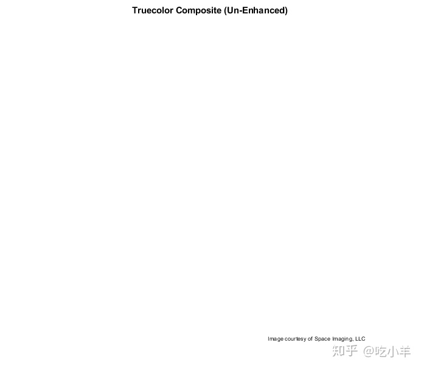
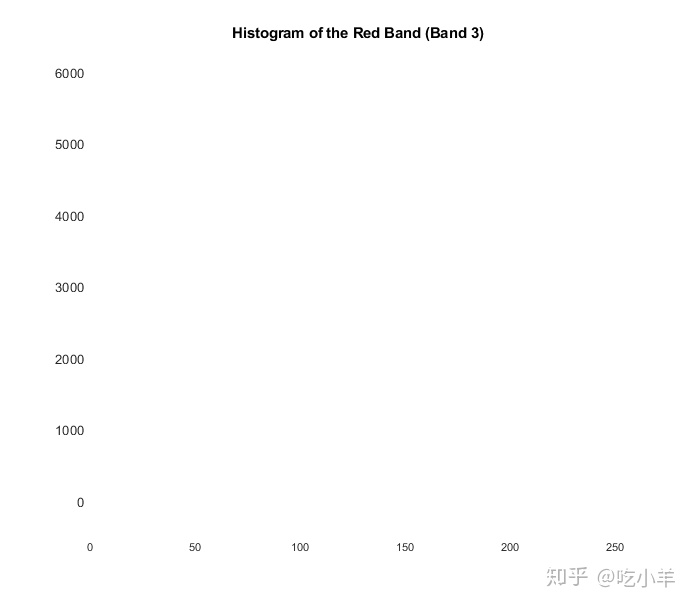
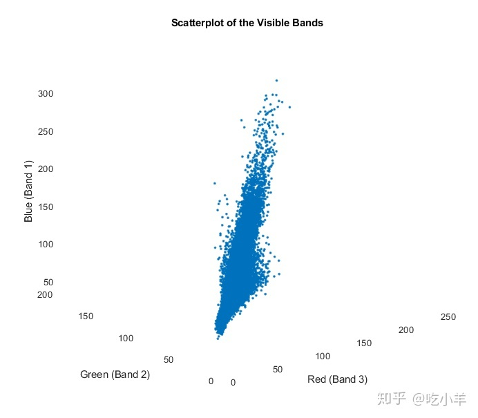
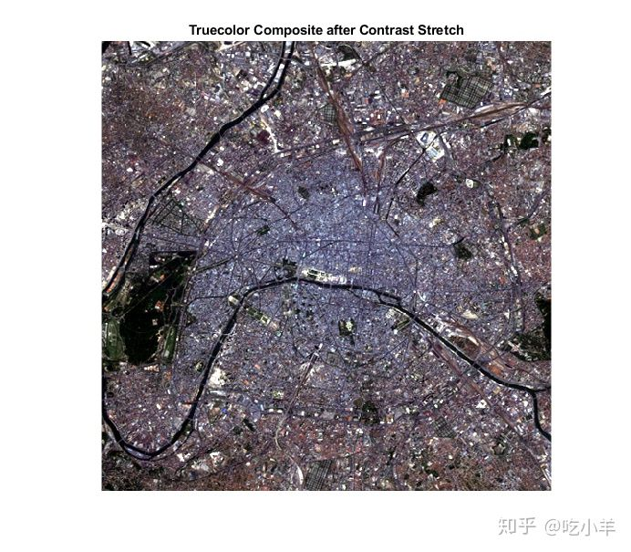
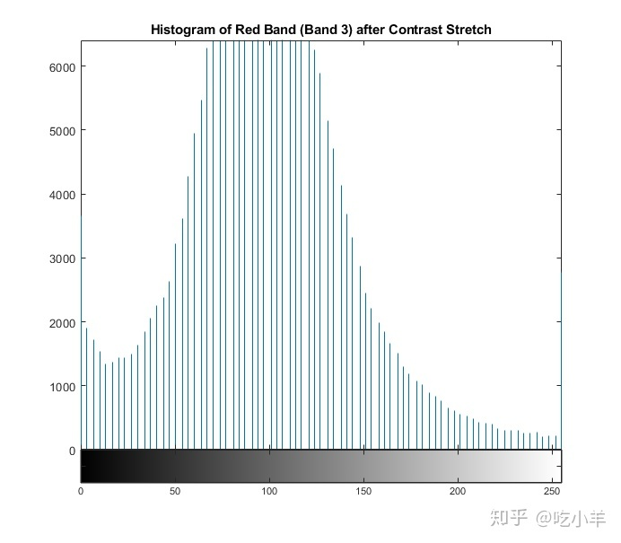
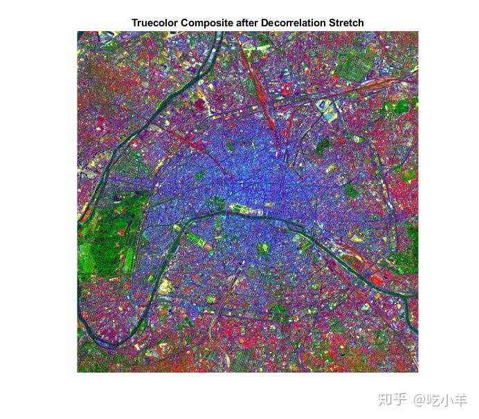
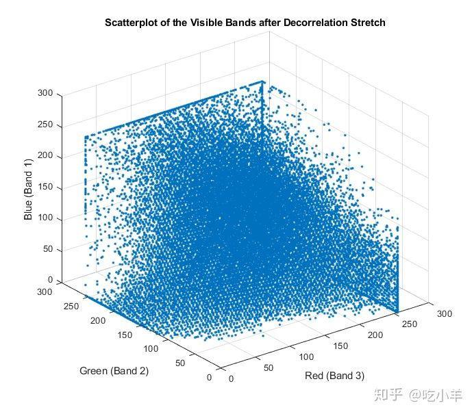
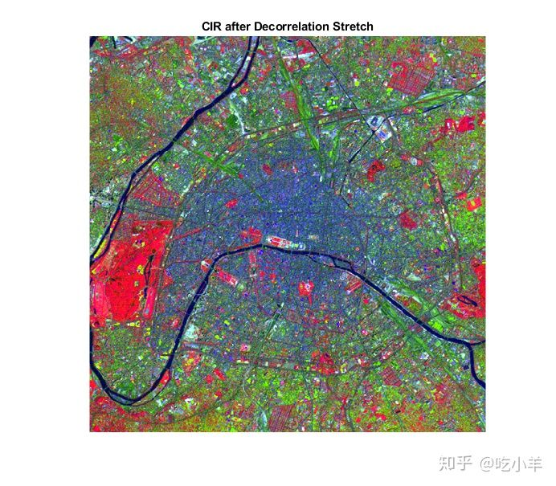

Home
此示例显示了用于多光谱数据的一些基本图像合成和增强技术。通常需要增强多光谱辐射或反射数据，以创建适合于视觉解释的图像。该示例使用了覆盖法国巴黎一部分的Landsat专题制图仪图像。七个光谱带以Erdas LAN格式存储在一个文件中。涵盖的概念包括：
从Erdas LAN文件读取多光谱数据
从不同的波段组合构建颜色合成
对比鲜明地增强图像
通过去相关拉伸来增强图像
使用散点图
从多光谱图像创建真彩色复合图像
LAN文件paris.lan包含一个7波段512 x 512 Landsat图像。像素值后跟一个128字节的标头，这些像素值按照增加的频带数的顺序按行（BIL）进行频带交错。它们以小尾数字节顺序存储为无符号的8位整数。
使用MATLAB®函数multibandread从LAN文件中读取波段3、2和1。这些波段覆盖了光谱的可见部分。将它们分别映射到RGB图像的红色，绿色和蓝色平面时，结果是标准的真彩色合成。最后的输入参数给multibandread，指定要读取的谱代和顺序，以便您可以在一个步骤中创建RGB复合。
truecolor = multibandread('paris.lan',[512, 512, 7],'uint8=>uint8', ...
128,'bil','ieee-le',{'Band','Direct',[3 2 1]});
真彩色复合图像的对比度极低，并且颜色不平衡。
imshow(truecolor)
title('Truecolor Composite (Un-Enhanced)')
text(size(truecolor,2),size(truecolor,1)+15,...
'Image courtesy of Space Imaging, LLC',...
'FontSize',7,'HorizontalAlignment','right')

探索未增强的真彩复合图像的直方图和散点图
例如，通过查看红色波段的直方图，您可以看到数据集中在可用动态范围的一小部分内。这是真彩色复合物显得暗淡的原因之一。
imhist(truecolor(:,:,1))
title('Histogram of the Red Band (Band 3)')

复合图像外观暗淡的另一个原因是可见带彼此高度相关。两频带和三频带散点图是衡量频谱带之间相关程度的绝佳方法。您可以使用轻松使它们plot。红绿蓝散点图的线性趋势表明可见光带高度相关。这有助于解释未增强的真彩色复合图像的单色外观。
r = truecolor(:,:,1);
g = truecolor(:,:,2);
b = truecolor(:,:,3);
plot3(r(:),g(:),b(:),'.')
grid('on')
xlabel('Red (Band 3)')
ylabel('Green (Band 2)')
zlabel('Blue (Band 1)')
title('Scatterplot of the Visible Bands')

通过对比度拉伸增强真彩复合图像
当您用imadjust将线性对比度拉伸应用于真彩色合成图像时，更容易识别表面特征。
stretched_truecolor = imadjust(truecolor,stretchlim(truecolor));
imshow(stretched_truecolor)
title('Truecolor Composite after Contrast Stretch')

对比拉伸后检查直方图
进行对比拉伸后，红色带的直方图显示数据已分散在更多可用动态范围内。使用imhist函数创建图像中所有红色像素值的直方图。
imhist(stretched_truecolor(:,:,1))
title('Histogram of Red Band (Band 3) after Contrast Stretch')

通过去相关拉伸来增强真彩复合图像
增强真彩色复合图像的另一种方法是使用去相关拉伸，从而增强高度相关通道之间的颜色分离。使用decorrstretch执行去相关拉伸。指定可选的名称/值对'Tol',0.1，以在去相关拉伸之后执行线性对比度拉伸。再次，表面特征变得更加清晰可见，但是以不同的方式。场景中的光谱差异被夸大了。一个明显的例子是左边缘的绿色区域，在对比度拉伸的复合图像中显示为黑色。这个绿色区域是Bois de Boulogne，这是位于巴黎西边缘的大型公园。
decorrstretched_truecolor = decorrstretch(truecolor,'Tol',0.01);
imshow(decorrstretched_truecolor)
title('Truecolor Composite after Decorrelation Stretch')

去相关拉伸后检查相关性
不出所料，去相关拉伸之后的散点图显示相关性大大降低。
r = decorrstretched_truecolor(:,:,1);
g = decorrstretched_truecolor(:,:,2);
b = decorrstretched_truecolor(:,:,3);
plot3(r(:),g(:),b(:),'.')
grid('on')
xlabel('Red (Band 3)')
ylabel('Green (Band 2)')
zlabel('Blue (Band 1)')
title('Scatterplot of the Visible Bands after Decorrelation Stretch')

创建和增强CIR复合图像
与可见波段一样，可以通过构建和增强RGB复合图像来查看覆盖光谱中不可见部分的Landsat波段的信息。由于叶绿素在光谱的这一部分具有高反射率，因此近红外（NIR）波段（波段4）非常重要。当与可见的红色和绿色（分别是波段3和2）组合以形成彩色红外（CIR）复合图像时，它甚至更有用。彩色红外（CIR）复合图像通常用于识别植被或评估其生长和/或健康状况。
通过读取原始的LAN文件并组成分别将波段4、3和2映射到红色，绿色和蓝色的RGB图像，构造CIR复合图像。
CIR = multibandread('paris.lan',[512, 512, 7],'uint8=>uint8', ...
128,'bil','ieee-le',{'Band','Direct',[4 3 2]});
尽管近红外（NIR）波段（波段4）与可见波段的相关性比可见波段彼此的相关性小，但去相关拉伸使许多特征更易于查看。彩色红外复合图像的一个特性是，它们在具有高植被（叶绿素）密度的区域中看起来是红色的。请注意，CIR复合图像中的Bois de Boulogne公园为红色，这与去相关拉伸的truecolor复合图像中的绿色外观一致。
stretched_CIR = decorrstretch(CIR,'Tol',0.01);
imshow(stretched_CIR)
title('CIR after Decorrelation Stretch')

======================================================================
我的测试结果及程序
下面是我测试的代码：

注：本文根据MATLAB官网内容修改而成。